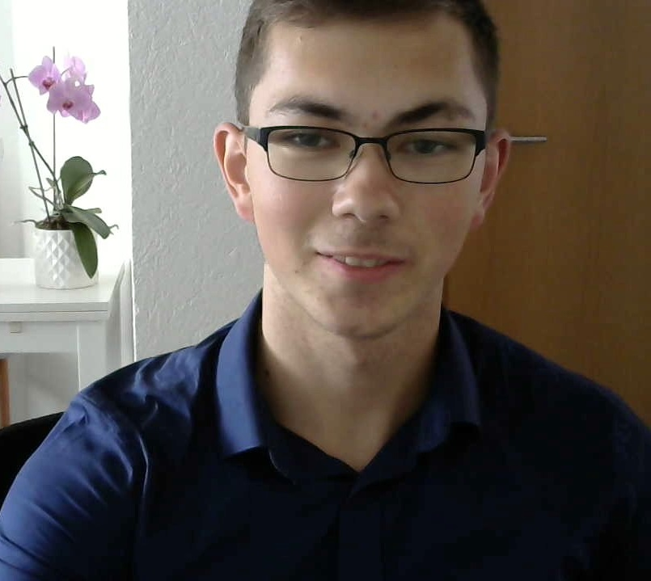

I'm Erik Klein. This is my digital CV and demo web page.
Ex-Competitive Programmer
Passionate Software Engineer
I'm a 19 year old from Germany and recently finished my Abiturs. I'm currently doing an internship as a Software Engineer at QAware GmbH in Munich and will start studying Computer Science at TH Rosenheim next semester.
I always loved thinking. From a young age, I got promoted by organizations for gifted students, like Hector-Seminar, Deutsche JuniorAkademien and Heidelberger Life-Science Lab, and discovered my interest and talent in computer science early. I started programming in 6th grade, and it captivated me since then. I always had the passion to solve problems, learn new technologies and build something visionary and useful.

Algorithm Design
I'm an expert at algorithm design, and able to come up with the best algorithms for complex problems. I was one of 20 German pupils to receive an extensive training in competitive programming as part of "IOI-Training" by Bundesweite Informatikwettbewerbe. This included three years of camps, lectures and practice contests.
The German IOI-Training Team
I mastered the following topics:
Graph and Tree Algorithms
Dynamic Programming incl. Optimizations
Data Structures
Sorting and Searching
Greedy Algorithms
Backtracking and Pruning Strategies
Heuristic Methods
Brute Force
Flows
Combinatorics
Automatons, Grammars and Languages
I acquired many skills, including:
Problem Solving and Analytical Thinking
Efficiency and Correctness Analysis
Programming in C++
Handling Intractable Problems
Understanding Complex Multi-Layer Systems
I solved more than 1000 olympiad problems, was consistently one of the Top 0.3% of high school competitive programmers in Germany and received awards from prestigious multinational competitions for high school students, e.g.
Central European Olympiad in Informatics (CEOI'21), 3rd place in DACH region. Only top 4 competitors from each country are selected for the team/delegation to participate.
Baltic Olympiad in Informatics (BOI'21), Participant in German Team (top 6 people)
USA Computing Olympiad (USACO), Advanced to Gold Division (there are four divisions, from Bronze to Platinum)
Bundeswettbewerb Informatik (BWINF), Prize Winner at Final Round, Top 12 out of 1700 participants
Swiss Olympiad in Informatics (SOI), 7th place in first round, with 200 participants
Germany at CEOIDistributed contest settingBOI TeamBWINF award ceremonyCEOI opening ceremonySOI day
Software Engineering
I have acqired deep knowledge about the theory of Software Engineering by taking the Coursera 3-Course Specialization by Hong Kong University of Science and Technology HKUST [Certificate]. I can apply important concepts from these fields:
Requirements Analysis and Modeling, inc. UML, Use-Case Diagrams
Defensive Programming, Software Testing and Refactoring
Agile Methods, Scrum
Software Quality
Software Analysis incl. Analysis Classes
Software Architecture
Design Patterns
Project Management
I have advanced skills in Java programming and am proficient in version control with Git.
To strengthen my skills, I was part of the pupil scholarship program by QAware GmbH, a software company known for it's quality, agile development and expertise in cloud technologies. For one year, I was mentored by one of their software engineers, took part in the further education program and worked in a team of pupils on a project.
To gain more experience, practice and become a better developer, I'll do an 11-week internship at QAware, where I'll work on a real project with senior engineers and architects.
Previously, I was responisble for a crucial machine learning project at ITscope GmbH, a modern local IT company. I worked for 9 weeks as software developer, and finished the work successfully. The system is now in live-use, has enormous impact (automating the company's processes) and the CEO is very satisfied [Reference 2021, Reference 2018].
Work at ITscope GmbH
Full-Stack Web Development
Currently I am breaking into web dev, learning the basics in a Coursera course by Johns Hopkins University and taking a Coursera specialization by HKUST. I am fond of these technologies:
HTML
CSS
JavaScript
Bootstrap
Machine Learning
I learned multiple data science methods in an openHPI course:
Different types of Clustering
Classification Algorithms
Frequent Itemset Mining, Outlier Mining
I took multiple Coursera Courses by Andrew Ng, where I learned:
Linear Algebra, Matlab/Octave
Linear and Logistic Regression
Theory and Practical Advice of Neural Networks
Support Vector Machines and their Kernels
Principal Component Analysis for Dimensionality Reduction
Anomaly Detection
Recommender Systems
Improving Deep Neural Networks: Hyperparameter Tuning, Regularization and Optimization
I applied this knowledge and used the algorithms in Python during two of my internships, where I used Scikit-Learn, Tensorflow, Keras and SQL.